我准备写一系列文章来记录阅读《Channel Codes》时留下来的笔记，这是第一篇，对应书中的第二章，介绍了有限域、向量空间、有限集合和图。无论是传统的信道编码还是现代的信道编码，都离不开这些代数和集合数学的概念，这些概念是信道编码的基础。
2.1 集合和二元运算
集合(set)就是一些特定对象的合集(collection)，这些对象被称作集合中的元素(element)。如：$X = {x_1, x_2, x_3, x_4, x_5, x_6}$，则 $X$ 是一个集合，它有 6 个元素。关于集合，我们需要知道下面这些：
- 有限集(finite set)：集合中只有有限个元素；
- 无限集(infinite set)：集合中的元素是无限个的；
- 基数(cardinality)：集合 $X$ 中元素的个数就是元素的基数，记作 $| X|$。
- 子集(subset)
- 真子集(proper subset)
定义在集合 $S$ 上的二元运算定义了一种规则，它对集合中的一对元素以确定的顺序进行运算，且结果仍然属于该集合。
associative（结合的）：运算满足结合律。
commutative（交换的）：运算满足交换律。
2.2 群
代数系统：集合定义在集合上的一些运算。
2.2.1 群的基本概念
定义：集合和定义在集合上的一个二元元算称为群，且满足如下条件：
- 运算满足结合律（associative）
- 集合有一个单位元（identity element）
- 对于任何一个元素，在集合中存在一个它的逆，且这个逆是唯一的。
如果一个群是可交换的，那么称其为阿贝尔群。
2.2.2 有限群
2.2.3 子群和陪集
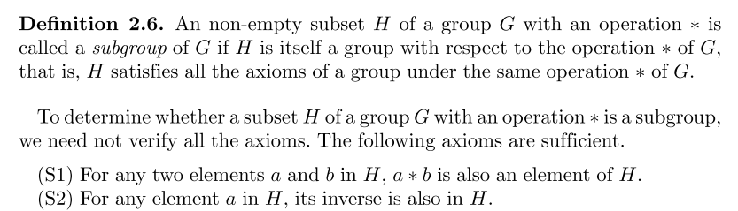
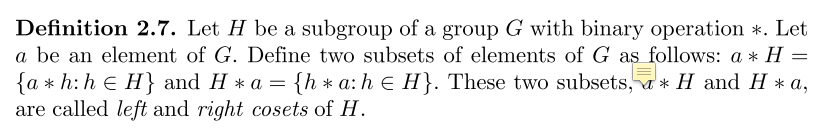
陪集的一些性质：
- No two elements of a coset of H are identical.
- No two elements from two different cosets of H are identical.
- Every element of G appears in one and only one coset of H.
- All distinct cosets of H are disjoint.
- The union of all the distinct cosets of H forms the group G.
拉格朗日定理：
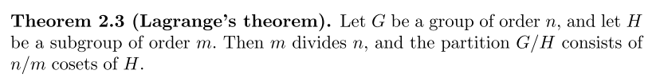
2.3 域
有限域在编码理论中非常重要。
2.3.1 定义和基本概念
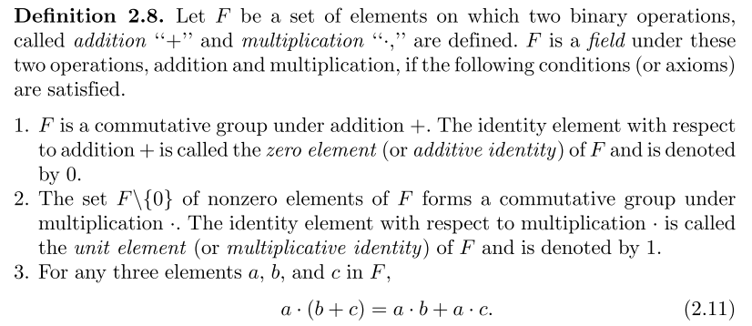
从定义在可以看到，域可以分为两个群，每个群各有一个单位元素，因此域的元素个数至少为2，且可以证明：存在只含有两个元素的域。
A field is simply an algebraic system in which we can perform addition, sub- traction, multiplication, and division without leaving the field.
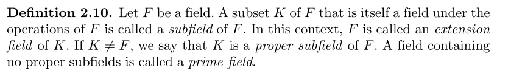
从下面这个定义也可以引入到有限域：
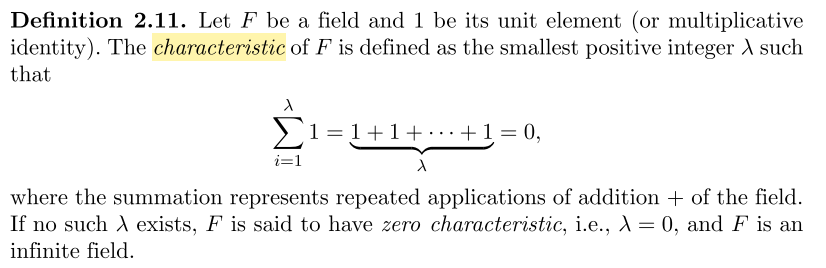
一条证明，解释了师姐讲文章时的疑问：
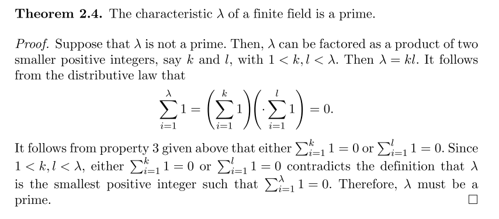
2.3.2 Finite Fields
有限域又叫伽罗华域，在差错控制编码中非常重要。记作 GF(p)，p 为素数。

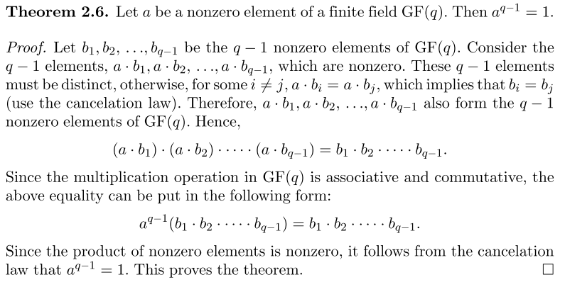
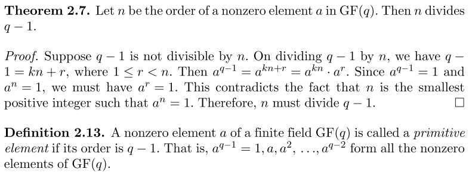
2.4 Vector Space
2.4.1 Basic Definitions and Properties
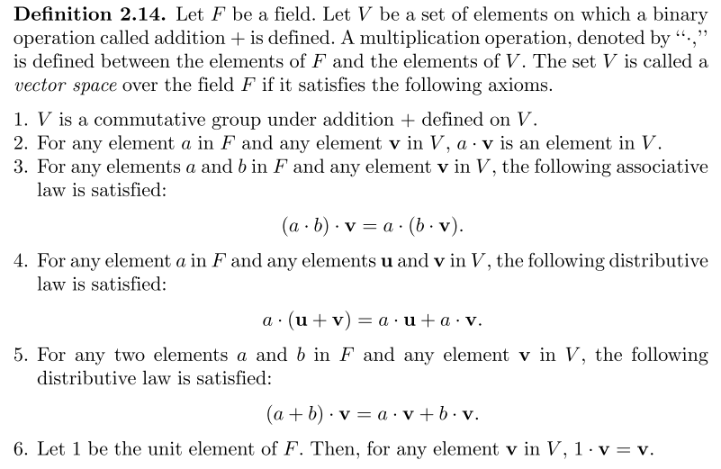
2.5 Polynomials over Finite Fields
2.6 Construction and Properties of Galois Fields
构造方法：通过 GF(p) 的 m 阶 primitive polynomials 得到 root a，那么，{0, 1, a, a^2, …, a^(p^m-2)} 构成了 GF(p^m)。
2.6.2 Some Fundamental Properties of Finite Fields
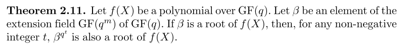
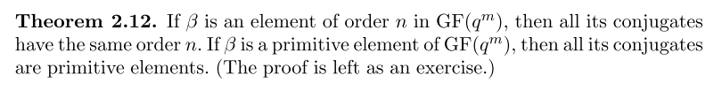
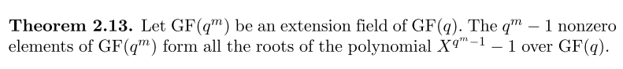
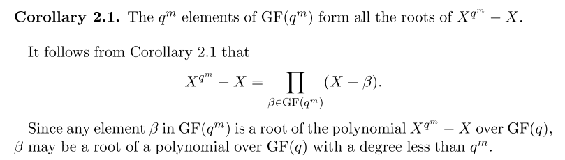
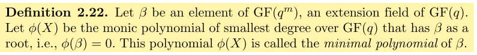
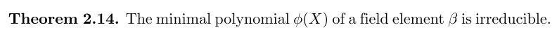
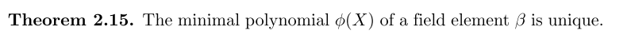
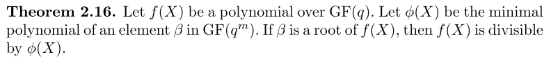
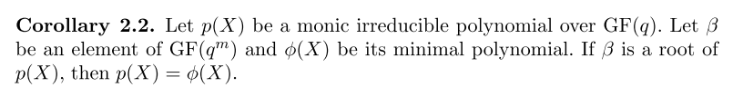
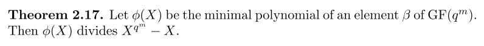
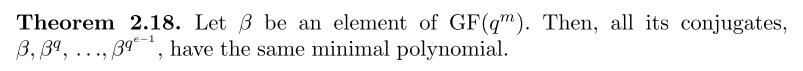
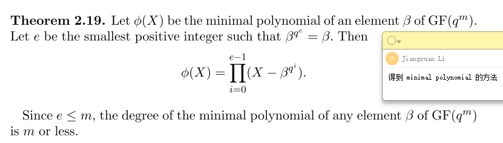